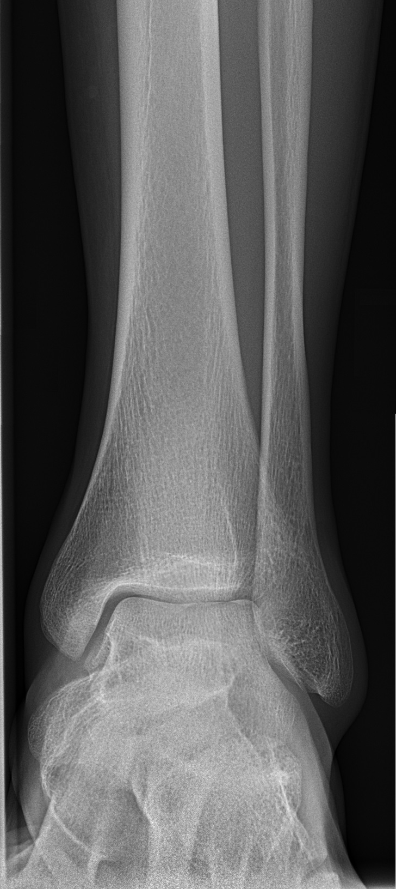

Ficha del catálogo
Radiografía de tobillo normal (frontal)
- Sistema
- Óseo
- Modalidad
- RX
- Región
- Tobillo
- Dificultad
- Básico
El esguince de tobillo es uno de los motivos de consulta más frecuentes en urgencias. La radiografía se solicita siguiendo criterios clínicos y su lectura se centra en la congruencia de la mortaja tibioperoneoastragalina.
Técnica
Proyección anteroposterior y proyección de mortaja, esta última con rotación interna del pie de 15-20°, que despliega el espacio articular en toda su extensión.
Qué observar
- Mortaja articular con espacio uniforme alrededor del astrágalo, tanto medial como superior y lateral
- Maléolos tibial y peroneo con corticales íntegras
- Espacio claro tibioperoneo distal, cuyo ensanchamiento indica lesión de la sindesmosis
- Domo del astrágalo liso, sin defectos osteocondrales
- Base del quinto metatarsiano, sitio frecuente de fracturas por avulsión que se confunden con esguince
- Aumento de partes blandas perimaleolares
Hallazgos
Tobillo con mortaja congruente, espacios articulares simétricos y estructuras óseas sin trazos de fractura.
Perlas
Un ensanchamiento medial de la mortaja mayor de 4 mm significa que el astrágalo se ha desplazado: Aunque no se vea trazo de fractura, hay una lesión ligamentaria significativa que requiere tratamiento.
Diagnóstico diferencial
- Fractura maleolar
- Se identifica una solución de continuidad cortical en el maléolo peroneo o tibial (su altura respecto a la sindesmosis determina el patrón y la estabilidad).
- Lesión de la sindesmosis
- El espacio claro tibioperoneo se ensancha y la superposición tibioperonea disminuye, con o sin fractura alta del peroné asociada.
- Esguince ligamentario sin fractura
- Solo se ve aumento de partes blandas perimaleolares con mortaja congruente y corticales íntegras, sin trazo ni desplazamiento del astrágalo.
- Lesión osteocondral del domo astragalino
- Aparece un defecto o una irregularidad focal en la superficie superior del astrágalo, típicamente en su borde medial o lateral, a veces con fragmento libre.
- Fractura de la base del quinto metatarsiano
- El dolor y el trazo se sitúan en el pie y no en el tobillo, por lo que solo se detecta si el estudio incluye esa zona o se solicita radiografía de pie.
- Fractura de calcáneo
- El trazo compromete el cuerpo calcáneo con disminución del ángulo de Böhler, y requiere proyecciones axial y lateral específicas.
Simuladores
- Los huesecillos accesorios como el os trigonum y el os subfibulare son redondeados y corticalizados por completo, a diferencia del fragmento agudo, de bordes irregulares y sin cortical.
- Las fisis abiertas del niño son bandas regulares; la fisis tibial distal se cierra de forma asimétrica en la adolescencia y ese cierre parcial simula trazos.
- Una proyección de mortaja con rotación insuficiente estrecha el espacio claro lateral y simula una sindesmosis normal cuando no lo es.
- El canal vascular del peroné distal es una línea fina, oblicua y esclerosa que no produce escalón cortical.
Por modalidad
- RX
- Estudio inicial guiado por criterios clínicos: Valora mortaja, maléolos, sindesmosis y alineación con dosis mínima.
- TC
- Precisa la extensión articular, el hundimiento del pilón tibial y las fracturas ocultas del retropié, y es esencial en la planificación quirúrgica.
- RM
- Estudio de elección para ligamentos, tendones peroneos, lesiones osteocondrales y fracturas ocultas con edema óseo.
- US
- Permite valorar de forma dinámica los tendones peroneos, el tendón de Aquiles y los ligamentos superficiales, y detectar luxaciones tendinosas.
Protocolo
En la anteroposterior el paciente está en decúbito supino con la pierna extendida, el pie en posición neutra y el rayo central en el punto medio entre ambos maléolos. La proyección de mortaja se obtiene rotando internamente todo el miembro entre 15 y 20°, de forma que ambos maléolos queden equidistantes del receptor y el espacio articular se despliegue en toda su extensión. La lateral incluye la base del quinto metatarsiano y la parte posterior del calcáneo. Ante fractura maleolar se valora incluir la totalidad del peroné para descartar una fractura proximal asociada.
Clasificación
La clasificación de Weber ordena las fracturas del tobillo según la altura del trazo peroneo respecto a la sindesmosis: Tipo A por debajo, generalmente estable; tipo B a la altura de la sindesmosis, con estabilidad variable; y tipo C por encima, casi siempre inestable y con lesión sindesmótica. La clasificación de Lauge-Hansen describe el mecanismo lesional combinando la posición del pie y la dirección de la fuerza, lo que ayuda a predecir qué estructuras están dañadas. Las reglas clínicas de Ottawa determinan cuándo está indicada la radiografía.
Errores frecuentes
- Aceptar como normal una mortaja evaluada solo en la anteroposterior sin la proyección de mortaja verdadera.
- No palpar ni radiografiar el peroné proximal ante una fractura maleolar medial, con lo que se pasa por alto una lesión alta con inestabilidad.
- Interpretar huesecillos accesorios como fragmentos de avulsión.
- Olvidar la base del quinto metatarsiano, una de las causas más frecuentes de dolor atribuido erróneamente a esguince.

tobillo mortaja maleolo astragalo esguince sindesmosis normal